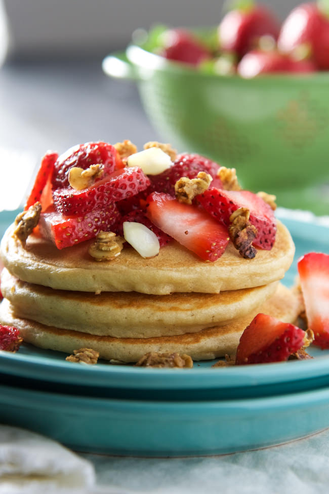

Yogurt Pancakes

Ingredients
- 2 cups white whole wheat flour
- 2 tablespoons coconut sugar (or regular sugar)
- 1 tablespoon baking powder
- 1/2 teaspoon sea salt
- 2 large eggs
- 1 1/2 cups unsweetened vanilla almond milk
- 1 cup non fat vanilla Greek yogurt
- 1 tablespoon vanilla extract
- 2 1/2 tablespoons coconut oil, melted
-
- *optional Garnish: Berries, peanut butter and maple
Directions
- In a large bowl, combine the flour, sugar, baking powder and sea salt. Whisk well and set aside.
- In another bowl, combine the eggs, milk, yogurt, and vanilla extract.
Whisk well until mixed then while whisking pour in the oil.
This will prevent the oil from solidifying further upon mixing with the cold ingredients. Whisk until smooth.
- Add the yogurt mixture to the dry ingredients and stir until batter is combined.
- Heat a griddle pan over medium heat and spray with non stick cooking spray.
Once heated, pour 1//4 cup of batter onto preheated pan. You may need to spread out
a bit into an even circle.
- Cook for 2-3 minutes, or until bubbles start to appear gently, or until light golden brown. Gently flip and cook for 2 more minutes.
Repeat with remaining batter.
- Serve with sliced strawberries, granola and maple, if desired.
Homepage